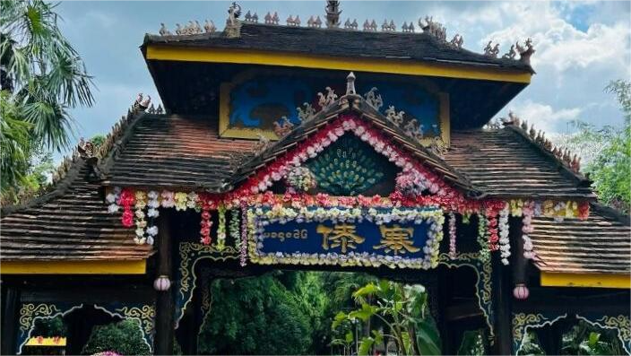
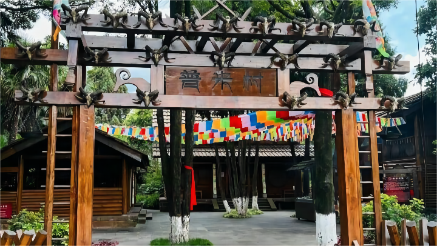
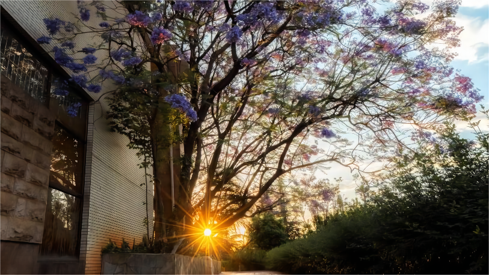
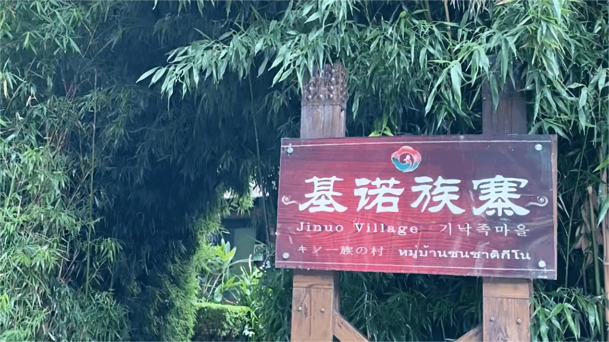

云南大学
云南民族村位于昆明市区南侧，滇池池畔，是昆明旅游的热门去处。村内有不同的民俗、工艺表演等，一日内就可以遍览云南众多民族的风情。
云南民族村位于昆明市区南侧，滇池池畔，是昆明旅游的热门去处。村内而且各有不同的民俗、工艺表演等，一日内就可以遍览云南众多民族的风情。
傣寨是进入民族村的第一个村寨，里面种满了热带和亚热带植物，一幢幢精致典雅的傣家竹楼点缀其间。有干栏式的民居楼、风情楼、泼水亭、佛寺、泼水广场等典型的傣式建筑物。引人注目的是村里的白塔——“波中塔”，它是按比例仿德宏州盈江的允燕塔建造的，40座小塔簇拥着高高的主塔，还有365个风铃声，十分悦耳。
彝族村很值得一看的是太阳历广场，广场中间竖有一根石柱，古时的彝族人便是通过石柱的日影来观测时辰。村里的巨“虎”则是古代彝族人的图腾。另外有村里还有彝族特有的土掌房建筑、烤酒作坊、文化楼等。
在四月傣族的“泼水节”、民俗村内也会举行热闹的庆典活动，不妨在此期间前往游玩，可以体验到更生动的民族风情。
云南大学地球科学学院@2021~2022